Faroes Trip February 2020
I exposed several rolls of 120 film in my Fuji GW690 “Texas Leica” during a trip to the Faroe Islands in February 2020. The camera has a fixed 90mm f/3.5 lens and takes 6 cm x 9 cm frames, or 8 per roll of 120. I sent them all to be processed by AG Labs.
Day 1
LRPS
Well, the good news came by email around 12:40 from Simon Vercoe, the LRPS admin assistant at the Royal Photographic Society, that I am finally to be awarded the distinction of “Licentiate” of the RPS. I’m delighted about that, of course. More on that story here.
Travelling by plane with film
We are on board a flight from Edinburgh to Vágar, the capital of the Faroe Islands. I have my Fuji GW690ii medium format camera with me and a stock of 9 film rolls that hopefully haven’t been ruined by the airport security scan at Edinburgh. Despite my protests, the security people scanned all of the unexposed film. We’ll see if there is any effect on the stock1. I think the greatest danger to the film still lies in my photographic skills.
 Airbus, iPhone 11 4.25mm lens at ISO 125. f/1.8 1/84s. Cropped, colour shifted warmer in Preview
Airbus, iPhone 11 4.25mm lens at ISO 125. f/1.8 1/84s. Cropped, colour shifted warmer in Preview
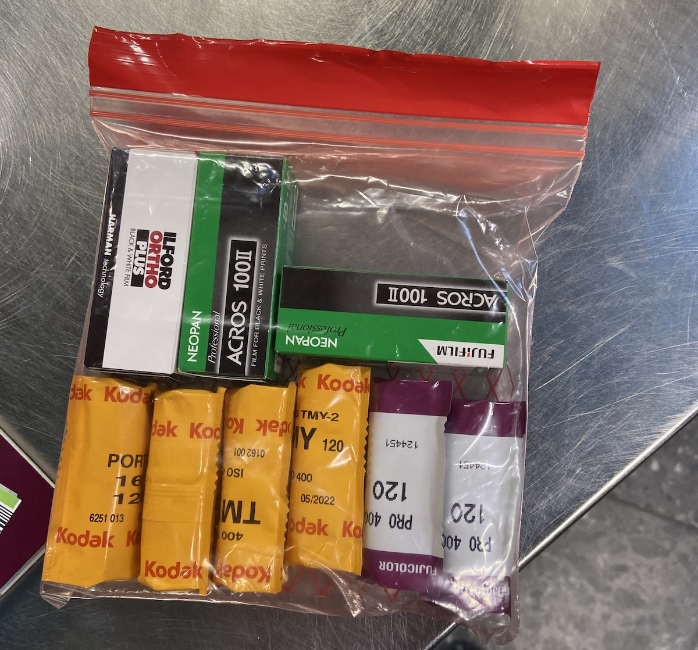 Films iPhone 11 at ISO 100. f/1.8 1/100s, cropped
Sandavágur
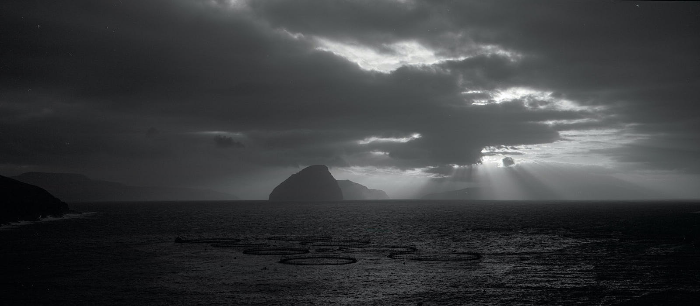 Sandavágur Kodak TMY, frame 3
Not Scotland, not Thailand, but with some characteristics of both. The first film I loaded into the camera was one of the rolls of Kodak TMY, aka T-Max 400 and fitted a deep yellow Tiffen filter. Why that one? It’s the one I have. Why a filter? We’re going to be focusing on landscapes and I want to try not to wreck the skies: the yellow will darken the bluer highlights in the sky and reveal the cloud texture. You can see how this turned out in the above image which was taken later that morning. As it turned out, this was the only roll of this film stock that saw the light of day on this trip2.
Kodak T-Max 400 exposures
| Frame | Image | Aperture | Shutter | Comment |
|---|---|---|---|---|
| 1. | Morning, East over the village | f/22 | 1/4s | Yellow filter |
| 2. | River | f/32 | 1/2s | Portrait |
| 3. | Sandavágur | f/32 | 1/60s | |
| 4. | Sea stacks | f/22 | 1/30s | From Bøur |
| 5. & 6. | Sea stacks | f/22 | 1/45s | |
| 7. | Beach | f/32 | 1/60s | |
| 8. | Beach | f/32 | 1/30s |
Day 2
Miðvágur
A good sleep. waking early to a still, deep darkness. Aurora Watch says we ought to be able to see some action but the 8 okta cloud cover says otherwise. Coffee, fruit and biscuits to wake us up instead. Once the daylight appeared we got to see and appreciate the view from the house.
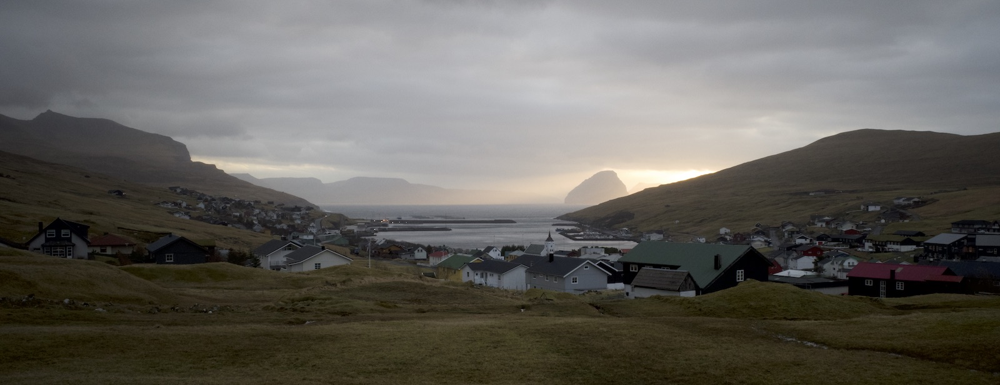 Miðvágur Ricoh GRIII 18.3mm ISO 1250 f/16 1/30s
Bøur
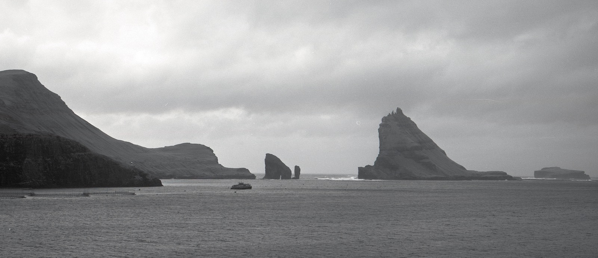 Sea stacks Kodak TMY, frame 4
The delightful little village at Bøur has some great views, including the Draganir Sea Stacks, an iconic feature of the Faroes. All around the islands and in these communities are signs reminding visitors of the importance of respect for the environment, the creatures that live here and the people. One of the striking features of this place is the black sand beach.
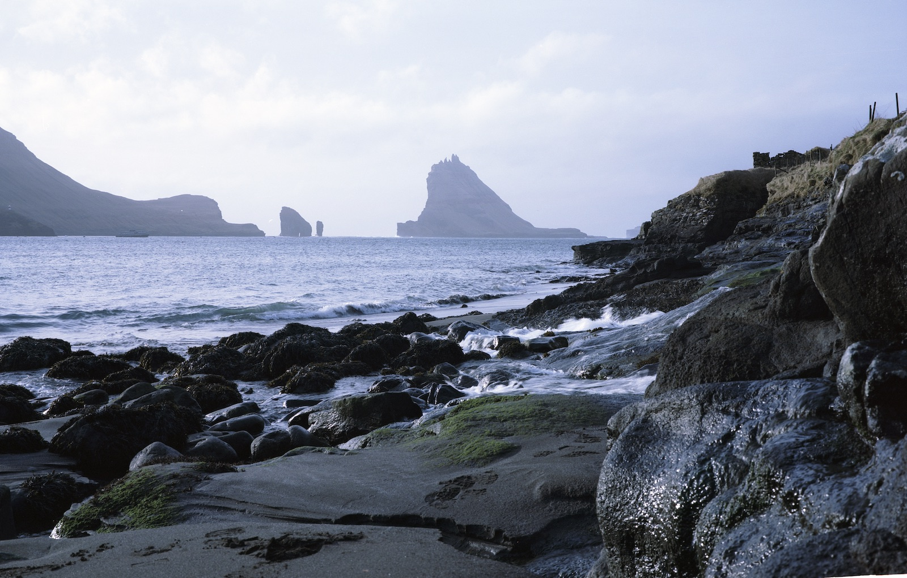 The black sands at Bøur beach Portra
My first efforts with Portra. I think we might have been too far North for this film, which seems to be more at home nearer the Equator. I exposed this film during the rest of day 2 and the following morning. If you think I didn’t take many photos, remember I was also carrying a couple of digital cameras, something I don’t do as much now.
Portra 160 exposures
| Frame | Image | Aperture | Shutter | Comment |
|---|---|---|---|---|
| 1. | Boat House | f/22 | 1/6s | at Bøur |
| 2. | The black sands at Bøur beach | f/22 | 1/30s | |
| 3. | Above Bøur | f/8 | 1/250s | Hand held |
| 4. | Waterfall | f/8 | 1/60s | Hand held |
| 5. | Waterfall island | f/8 | 1/60s | Hand held |
| 6. | Waterfall island | f/8 | 1/60s | Hand held, portrait |
| 7. | Beach church | f/22 | 1/8s | Next day |
| 8. | Giljavegur | f/16 | 1/60s | Sandavágur, hand held |
Digital backup
I finished that roll of TMY at Bøur on the beach, and backed up the captures using the Ricoh GRIII I carry everywhere, and my Fuji X-T2 fitted with the brilliant Fuji 16mm f/1.4 prime lens. I wondered whether the sun was too low in the sky for the Portra film (Miami, this ain’t) but the film worked out really nicely, in my view.
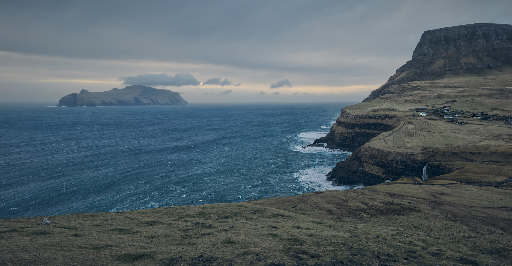 Gasadalur
The best image of the day has been a 3-photo stitch of the village Gasadalur from the bench at a hairpin bend in the road looking west towards the helipad that was the only outside communication link for the community before the road was built. This is a 3-image stitch panorama taken with a Fuji X-T2, using the XF16mm F1.4 R WR lens. ISO 400, f/11, 1/60s.
Later - re-scanning
I re-scanned a couple of these images to see if the output quality was any better. It is, depending on how you measure it. This is a (reduced version of the scanner output) 350 Mega-pixel file, scanned from 6x9cm negative at 6400 dpi:
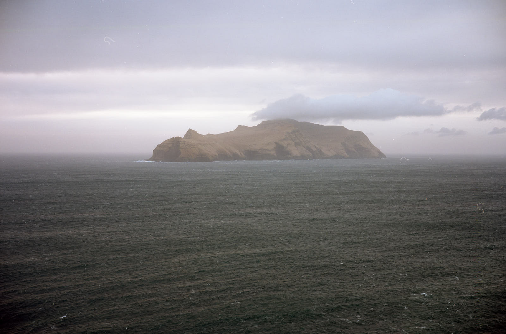 Island (Re-scan of frame 5, Portra)
If you compare the quality of image I got with the Fuji X-T2 (Gasadalur, above), there really is no argument for film photography, based upon these results. Now, I know that medium format cameras capture a lot of information, but that depends on a lot of things being exactly right. Get more than a couple of parameters sub-optimal and you’re wasting your time striving for that Nirvana of image-making. To me, the important difference is how it feels.
Day 3
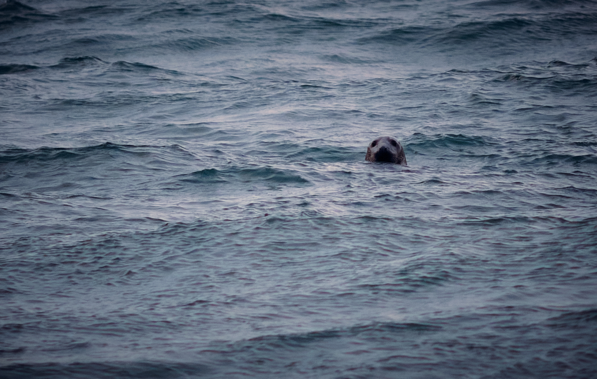 Seal at Sandavágur (cropped) Fuji X-T2, XF90mm F2 R LM WR, ISO 800, f/2 1/500s
Reflections
Studying the local guide map over coffee and a biscuit, I realise how ignorant I feel about the place and culture I am in. This, as a consequence of the pace of life I am leading, ironically to pay for the privilege of travel. I will no doubt go home full of resolutions to do something about this, which will be dragged into the quicksand of daily hustle and bustle, leaving only the guilt as trace that I ever made them.
Sandavágur
We drove down to Sandavágur for the sunrise, which was wintery. Kara played with waves and the seals and I took a photo of the floodlit church which didn’t turn out the way I hoped. This is the church, taken the next day with Fuji Pro 400H.
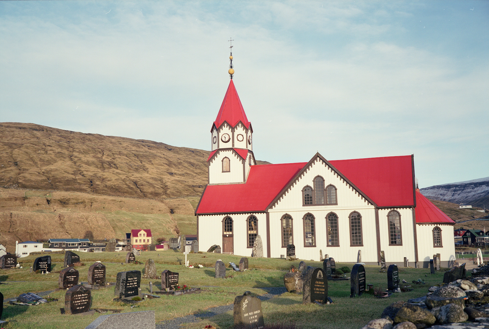 Sandavágur Church Fuji Pro 400H, second roll, frame 2
Trøllkonufingur
We drove to the Witch’s Finger (Trøllkonufingur) and walked along far enough to see the stack and promised to return to catch the sun rising here tomorrow.
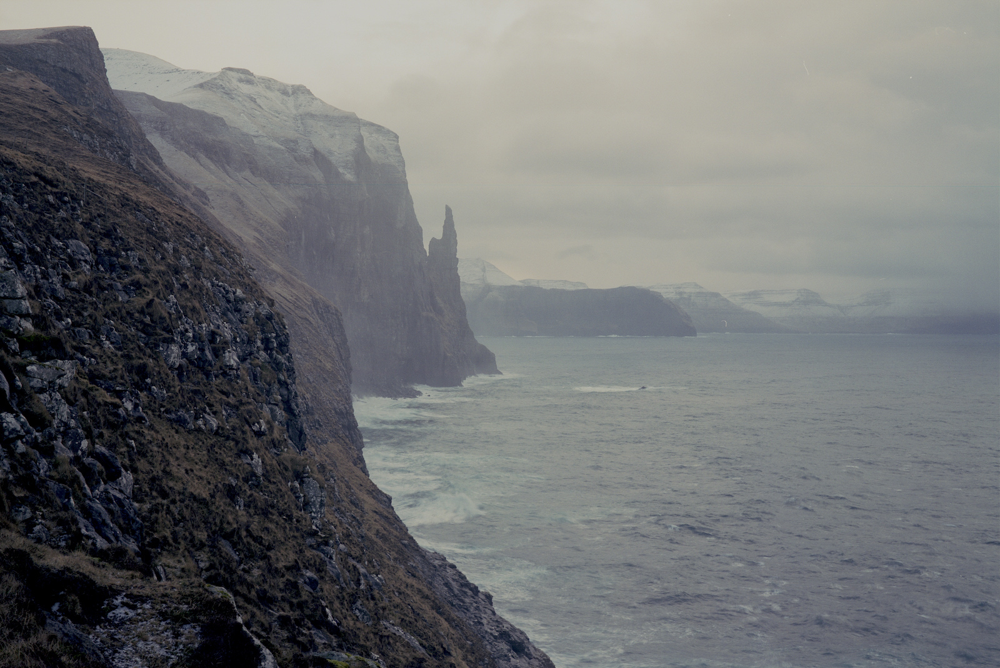 Trøllkonufingur Fuji Pro 400H, post processed in Iridient
Tórshavn
After a good breakfast we headed for the Streymoy tunnel and Tórshavn, where we ate extremely expensive sushi. One of the delights of the Faroes is that they have not learned how to do tourism yet, with its expected levels of service. Certainly our waitress hadn’t done the course. I’m not complaining - it’s nice to have the feeling that you’re not just following in the footsteps of 80 million people before you, taking the same photos. I didn’t take many photos in the town: it’s nice, and there is a harbour and some old buildings but it was raining and I was happy just experiencing the place.
Fuji Pro 400H exposures
I used 2 rolls of Fuji Pro 400H in different contexts: starting with the Trøllkonufingur, the town of Tórshavn, and at Gasadalur, the iconic lake over the sea.
| Frame | Image | Aperture | Shutter | Comment |
|---|---|---|---|---|
| 1. | Trøllkonufingur | f/22 | 1/125s | The “witchs fingers”. Hand held. |
| 2. | Waterfall | f/11 | 1/125s | |
| 3. & 4. | Tórshavn alley | f/8 | 1/60s | |
| 5. & 6. | No record | Next day (9th) | ||
| 7. | Trøllkonufingur | f/32 | 1/4s | Portrait |
| 8. | Trøllkonufingur | f/32 | 1/4s | Landscape |
| Frame | Image | Aperture | Shutter | Comment |
|---|---|---|---|---|
| 1. | Day 4, Yellow cottage near Miðvágur | f/11 | 1/60s | Hand held. |
| 2. | Sandavágur Church | f/16 | 1/125s | |
| 3. | Sandavágur Church | f/16 | 1/250s | Portait |
| 4. | Over village | f/16 | 1/125s | |
| 5. | Gasadalur | f/22 | 1/125s | |
| 6. | Gasadalur | f/32 | 1/30s | |
| 7. | Slave cliff | f/32 | 1/30s | |
| 8. | Slave cliff | f/32 | 1/30s | Portrait |
Day 4
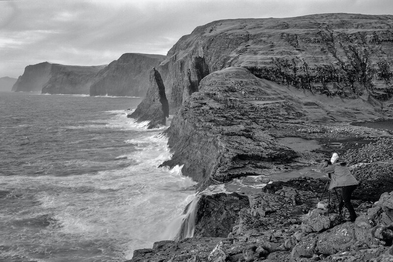 My wife, photographer Kara Mudie, at work at the Bøsdalafossur falls. Acros
Bøsdalafossur
We went out for sunrise at the Witch’s Finger (Trøllkonufingur) which was unspectacular due to clouds obstructing the sun but still fun. After breakfast, we headed out to find the lake above the sea. We did, but not before shelling out 200 Króna each for the privilege of access to the footways. A nicely spoken local girl was manning the barricade and promising tea and coffee when we returned from our hike.
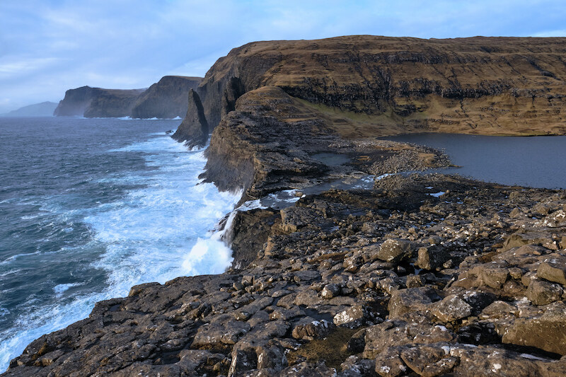 Bøsdalafossur Fuji X-T2 XF16mm ISO 200 f/16 1/50s, some post processing in Capture One Pro 20
Of course, she wasn’t there when we returned after sunset. We didn’t care much, having had around 10km and 120m of elevation to stretch our muscles on. Leitisvatn / Sørvágsvatn lake (“the lake above the sea”) pours over the Bøsdalafossur waterfall 30 metres into the sea below, which crashes dramatically against the cliff edges as if it were trying to get back up into the peaceful waters of the lake, where people were kayaking when we were there.
Trælanípan (Slave Cliff)
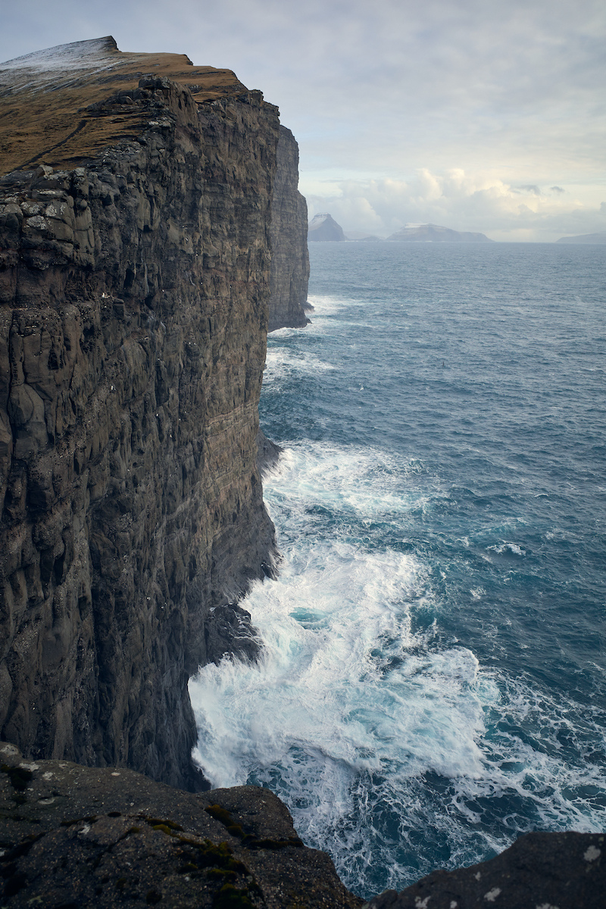 Trælanípan Ricoh GRIII ISO 200 f/5 1/400s, some post processing in Capture One Pro 20
The cliffs on the walk to the lake are several hundred metres above the sea and even on a fairly calm day, as today was, the thought of a sudden gust or a seagull with a sense of humour kept us focused and not too close to the edge. We met a local near the top of the walk who chatted in good English about the Scottish fishermen who threw chocolate to the local kids, who in turn sold lighters to the fishermen. My wife’s grandfather was one of those fishermen.
Yellow cottage near Miðvágur
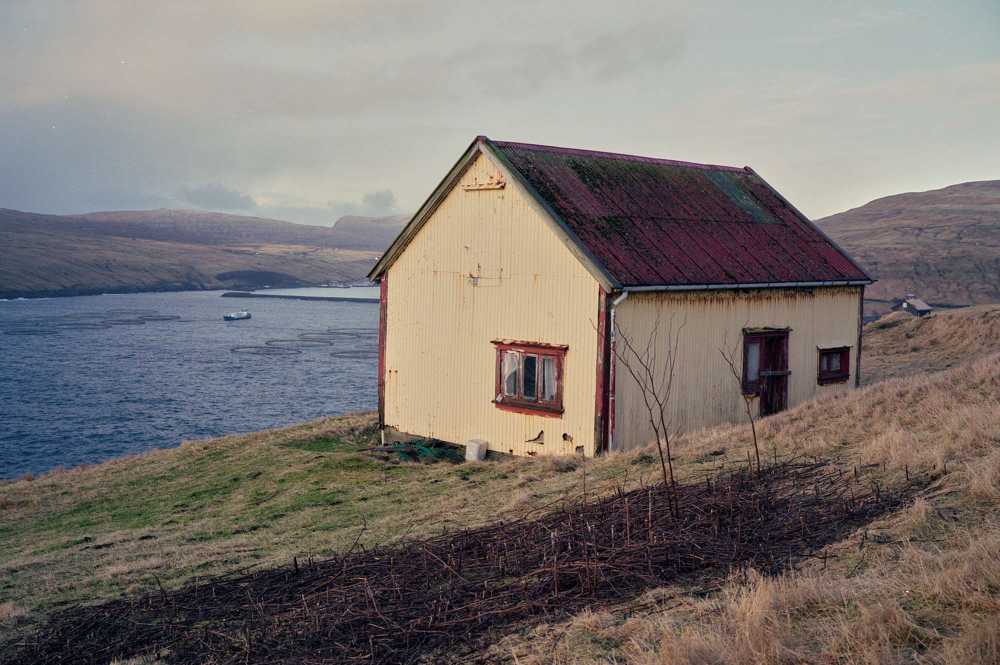 Yellow cottage near Miðvágur Fuji Pro 400H
We passed this little shed-cum-cottage several times as we explored the area around Miðvágur. I had to stop to capture this scene with the Fuji Pro film I was carrying. I love the colours and would love to come back to see it again in the summer light.
Nix: the Faroese Kelpie
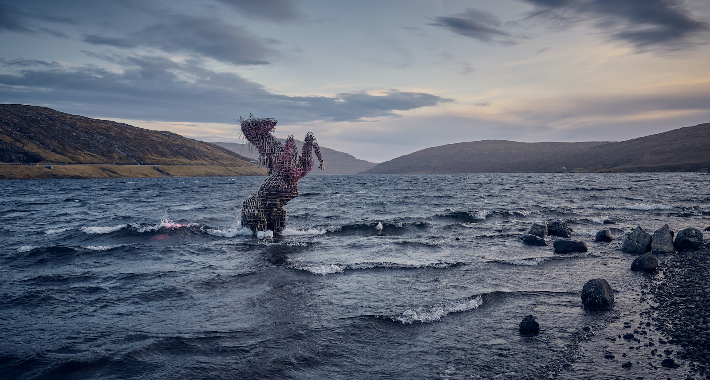 Nix X-T2 XF16mm ISO 400 f/2.8 1/500s pp and cropped in Capture One Pro 20
We found this artsy sculpture near the roadside that runs by Lake Sørvágsvatn. It represents a Nykur, a mythical Scandinavian creature that drags children down to the bottom of the icy waters. Saying the name of the creature makes it lose all of its powers. I wonder if someone said the name of the sculptor.
Fuji Acros 100 II
First time out with Acros was in the early morning as the sun came up over the Trøllkonufingur. In retrospect, this is probably not the best situation to use this legendary contrasty film. The results were not stunning, in my view, and certainly not as good as I expected, but that’s operator error and not a problem with the film stock. Notice the first few exposures are all long, but get less long as the Northern winter light improved.
| Frame | Image | Aperture | Shutter | Comment |
|---|---|---|---|---|
| 1. | Trøllkonufingur | f/32 | 1s | Portrait |
| 2. | Trøllkonufingur | f/32 | 1s | Portrait, yellow filter |
| 3. | Trøllkonufingur | f/32 | 1s | Landscape |
| 4. | Trøllkonufingur | f/32 | 1/2s | Landscape |
| 5. | Fence | f/32 | 1/4s | Landscape |
| 6. | Shed, river | f/22 | 1/4s | |
| 7. | Trøllkonufingur | f/32 | 1/8s | |
| 8. | Trøllkonufingur and fence | f/32 | 1/8s |
| Frame | Image | Aperture | Shutter | Comment |
|---|---|---|---|---|
| 1. | Sea stacks | f/32 | 1/4s | Portrait |
| 2. | Sea stacks | f/32 | 1/4s | Landscape |
| 3. | Bøsdalafossur falls | f/32 | 1/4s | |
| 4-8. | Bøsdalafossur falls | f/32 | 1/2s |
Ilford Ortho Plus 80
Same applies to this film as the Acros. I’m not giving up on it, because I’ve seen good results elsewhere but I’m not sufficiently expert to get the most out of orthographic film yet. This point is emphasised by the fact that I left the lens cap on for frames 2 and 3. My notes suggest I had an ND filter on for these pictures. That possibly didn’t help much either.
| Frame | Image | Aperture | Shutter | Comment |
|---|---|---|---|---|
| 1. | Bøsdalafossur | f/32 | 1/8s | Cliffs |
| 4., 5. | Diptych of cliffs | f/32 | 1/4s | |
| 6. | Sea stacks | f/32 | 1/2s | |
| 7., 8. | Sea stacks | f/32 | 1/4s |
Day 5
 Huts near Vágar Airport Portra, second roll, frame 4
Huts near Vágar Airport Portra, second roll, frame 4
Coming home
No early adventures for us today but we didn’t have to leave the house to see a range of weather, including a gorgeous sunrise and snow from the lounge window.
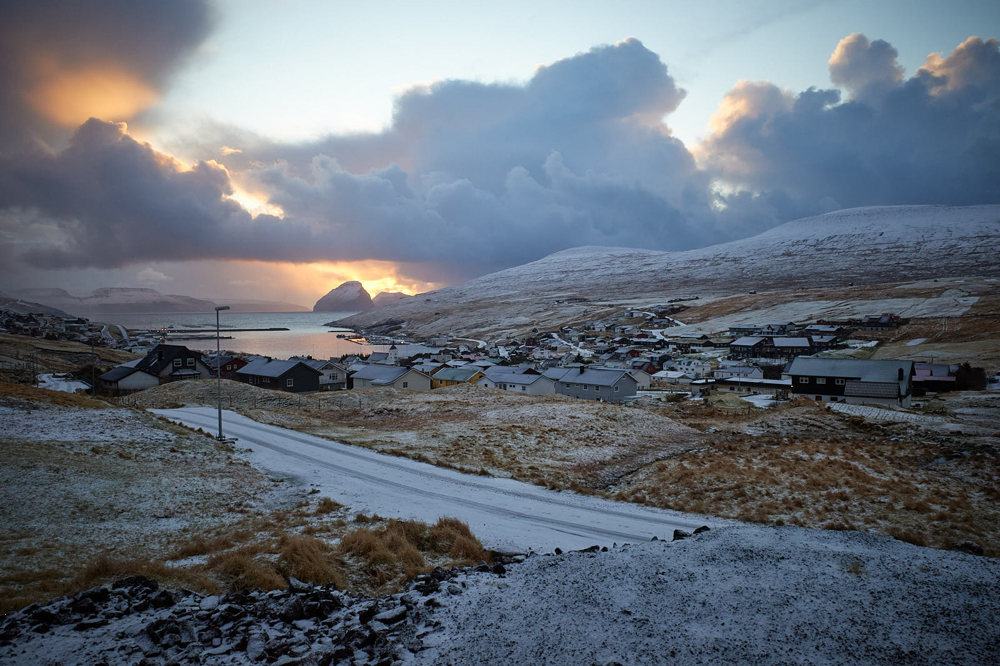 Sunrise Ricoh GRIII ISO 800 f/16 1/30s, pp in Capture One Pro 20
We packed and I loaded my last roll of film, a Kodak Portra 160. Replenishing the hire car’s tank with about 20 litres of petrol cost about 200 Króna, the same as a single adult ticket to walk on the land nearby. We stopped at the huts in the place Kara had seen from that walk yesterday, and I ran off the final frames before packing the exposed rolls into a poly bag for easy security inspection at the airport.
Check in made us feel like children again as a nice lady talked us through getting a luggage tag printed at the self-service machines, and loading our bags onto the automatic conveyor. Duty-free was actually cheap and I couldn’t resist buying a pack of Kvikk Lunsj. Interestingly, security did a visual check of the bag of film stock at my request (once the supervisor had OK’d it), so the only scan my rolls have had was at the grumpy airport at Edinburgh. I think I’m going to have to try to find out what the rules are on this - were the Faroese just being nice, reasonable people, or were the Scots just being bastards? I’d like to know but from a Kodak article I read yesterday the hand luggage scanners at airports are of too low a power to affect film stock significantly, even with multiple scans.
Later
At home, I packed the rolls off to AG Photo in Birmingham using their pre-paid mailer. Grand total of the processing costs from the trip is just under forty quid.
Kodak Portra 160 2
The second roll of Portra I used on the last day, as we cleared out of the house and hit the road for the airport. On the way there, we stopped at the roadside to capture the fishing huts.
| Frame | Image | Aperture | Shutter | Comment |
|---|---|---|---|---|
| 1., 2. | View from the house | f/11 | 1/60s | |
| 3. | Huts near Vágar Airport | f/11 | 1/60s | |
| 4. | Huts near Vágar Airport | f/11 | 1/60s | |
| 5-8. | Huts near Vágar Airport | f/32 | 1/8s |
Film costs
Total film stock cost £83.00, plus processing costs £38.80 (£3.49 C-41, £3.99 BW, £4.89 pp, AG Photolabs). Total costs £121.80 for 70 frames (2 were spoilt - lens cap on), or about £1.74 per frame on average. Breakdown by film:
| Qty. | Brand | Type | ISO | per roll | inc. pp | per frame |
|---|---|---|---|---|---|---|
| 2 | Fujifilm Pro 400 H | Colour | 400 | £ 8.30 | £ 12.33 | about £1.55 |
| 2 | Kodak Portra | Colour | 160 | £ 8.80 | £ 12.83 | about £1.60 |
| 2 | Kodak T-Max | BW Pan | 400 | £ 6.40 | £ 10.93 | about £1.37 |
| 1 | Ilford Ortho Plus | BW Ortho | 80 | £ 8.00 | £ 12.53 | about £1.57 |
| 2 | Fujifilm Neopan Acros II | BW Pan | 100 | £ 14.00 | £ 18.53 | about £2.32 |
Footnotes
There hasn’t been, as far as I can tell. None of the film rolls were over ISO 400, and the airport scanners nowadays seem to be quite low energy, although there is some concern, especially with the increase in the use of CT scanners at airports, mainly in the US. See this post from Petapixel, for example, which reports on advice from Kodak that there is evidence of significant damage to film every time it is scanned. Caveat emptor, and tie up your camel.↩︎
The other one of these was sent unexposed to AG for processing although who knows how I managed that. They processed it, of course, but without telling me. I just got 8 clear frames back.↩︎